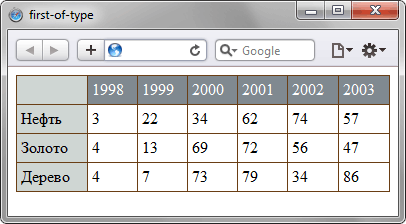

Псевдокласс :first-of-type
Псевдокласс :first-of-type задаёт правила стилей для первого элемента в списке дочерних элементов своего родителя. К примеру, добавление :first-of-type к селектору td устанавливает стиль для всех первых ячеек, поскольку родителем для элемента <td> выступает элемент <tr>.
Синтаксис
Селектор:first-of-type { ... }Пример
<!DOCTYPE html>
<head>
<meta charset="utf-8">
<title>first-of-type</title>
<style>
table {
border-collapse: collapse; /* Убираем двойные границы */
width: 100%; /* Ширина таблицы */
border-spacing: 0; /* Расстояние между ячеек */
}
td {
border: 1px solid #6A3E14; /* Параметры рамки */
padding: 4px; /* Поля в ячейках */
}
tr:first-of-type {
background: #808990; /* Цвет фона */
color: #fff; /* Цвет текст */
}
td:first-of-type {
background: #CFD6D3; /* Цвет фона */
}
</style>
</head>
<body>
<table>
<tr>
<td> </td><td>1998</td><td>1999</td><td>2000</td><td>2001</td>
<td>2002</td><td>2003</td>
</tr>
<tr>
<td>Нефть</td>
<td>3</td><td>22</td><td>34</td><td>62</td><td>74</td><td>57</td>
</tr>
<tr>
<td>Золото</td>
<td>4</td><td>13</td><td>69</td><td>72</td><td>56</td><td>47</td>
</tr>
<tr>
<td>Дерево</td>
<td>4</td><td>7</td><td>73</td><td>79</td><td>34</td><td>86</td>
</tr>
</table>
</body>
</html>Результат данного примера показан на рис. 1.

Рис. 1. Результат использования псевдокласса :first-of-type в таблице
Спецификация
| Спецификация | Статус |
|---|---|
| Selectors Level 4 | Рабочий проект |
| Selectors Level 3 | Рекомендация |
Браузеры
| Internet Explorer | Chrome | Opera | Safari | Firefox |
| 9 | 1 | 9.5 | 3.2 | 3.5 |
| Android | Firefox Mobile | Opera Mobile | Safari Mobile |
| 2.1 | 1 | 10 | 3.2 |